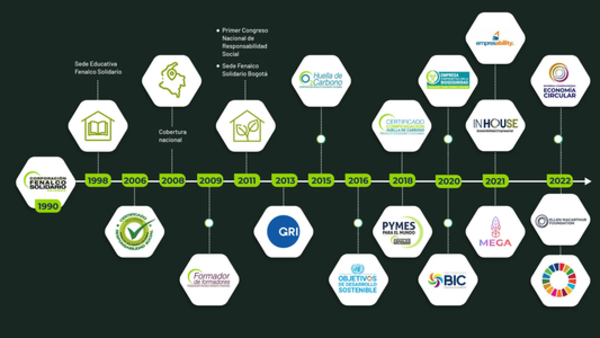

Somos embajadores de los objetivos de desarrollo sostenible
El 15 de noviembre de 1990 se firmo el acta de constitucion de La Corporacion Fenalco Solidario Colombia,
fundada por comerciantes y empresarios afiliados a Fenalco Antioquia, quienes entendieron la necesidad de
asumir un compromiso social y asi participar activamente en la construccion de desarrollo y sostenibilidad.
Inicialmente fuimos constituidos para canalizar los recursos economicos y logisticos del comercio organizado
hacia el apoyo y realizacion, de obras y actividades de beneficio social.

**1990:** Fundación de la Corporación Fenalco Solidario Colombia.
- **1998:** Inicio de la Sede Educativa Fenalco Solidario.
- **2006:** Introducción del Certificado en Responsabilidad Social, reconocimiento a organizaciones comprometidas con proyectos sociales y ambientales.
- **2008:** Ampliación de la cobertura a nivel nacional.
- **2009:** Creación del Programa de Capacitación en Responsabilidad Social, orientado a fortalecer prácticas empresariales.
- **2011:** Apertura de la sede en Bogotá y celebración del Primer Congreso Nacional de Responsabilidad Social.
- **2013:** Establecimiento de una alianza con el Global Reporting Initiative (GRI).
- **2015:** Lanzamiento del Programa de Medición de Huella de Carbono para apoyar a las organizaciones en temas ambientales.
- **2016:** Integración de los Objetivos de Desarrollo Sostenible (ODS) en la estrategia de negocio.
- **2018:** Inicio del programa "Pymes para el Mundo" y del Certificado de Compensación de la Huella de Carbono.
- **2020:** Reconocimiento del compromiso en bioseguridad y responsabilidad social, con Fenalco como aliado principal.
- **2021:** Introducción de programas como "Sostenibilidad Inhouse", el "Sello ODS", y "Bioseguridad Eventos".
- **2022:** Implementación del Certificado de Economía Circular, ampliando aún más su enfoque sostenible.